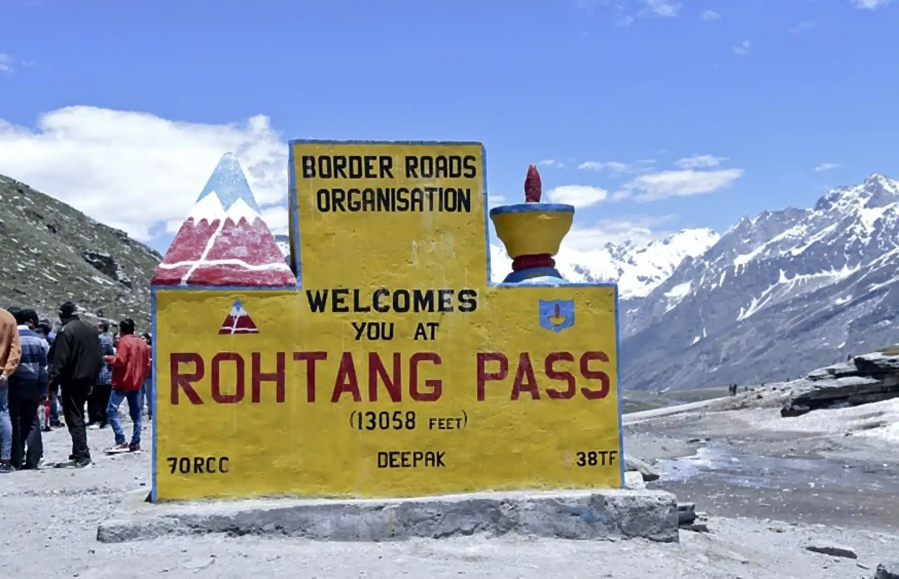

Top Places to Visit in Manali

Solang Valley
Adventure hub for skiing, paragliding, zorbing, and snow activities.

Rohtang Pass
High mountain pass offering panoramic views and snow experiences.

Hadimba Temple
Ancient wooden temple surrounded by cedar forests.

Old Manali
Laid-back area known for cafés, culture, and riverside views.